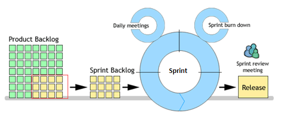

| Main Description |
The Sprint Backlog is a selection of user stories that is going to be developed during the upcoming or ongoing Sprint. It is selected from the top of the Product Backlog by the team together with the Product Owner. Unless there are specific reasons to do otherwise, the
selection goes from the top down, thus selecting the highest priority user stories. The amount os user stories that is
selected depends on how much the team thinks they can do during the upcoming sprint.
The selected user stories are removed from the product backlog and added to the sprint backlog. From there they will be
tracked on progess during the sprint.

|